Suelo
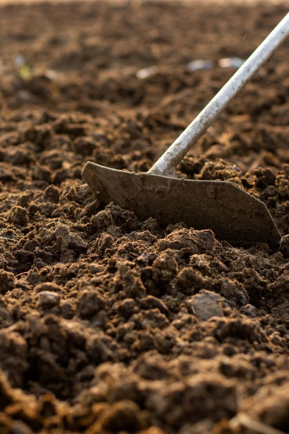
Analiza el suelo antes de decidir el cultivo
Cada cultivo tiene exigencias distintas de textura, drenaje, pH y nutrientes. Un análisis previo evita
sembrar en suelos con limitaciones fuertes que luego son costosas de corregir.
- Ejemplo: La yuca prefiere suelos arenoso–arcillosos bien drenados, sin charcos, con pH de 5.5 a 6.5.
- Ejemplo: El maíz responde mejor en suelos francos o franco–arenosos, ricos en materia orgánica, con pH entre 5.8 y 7.0.
Suelo
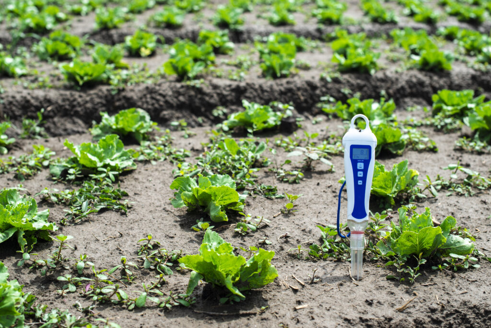
Ajusta el pH al rango ideal de tu cultivo
El pH del suelo controla la disponibilidad de muchos nutrientes. Mantenerlo en el rango adecuado mejora la
absorción de calcio, magnesio, potasio y micronutrientes como boro, hierro y cobre.
- Rangos útiles: muchos cultivos del Atlántico rinden bien en pH ligeramente ácido (5.5–6.5), evitando suelos muy alcalinos donde se bloquea el hierro y el boro.
- Recomendación: si el pH está muy alto o muy bajo, consulta al laboratorio por la enmienda adecuada (cal agrícola, yeso, materia orgánica) antes de sembrar.
Suelo
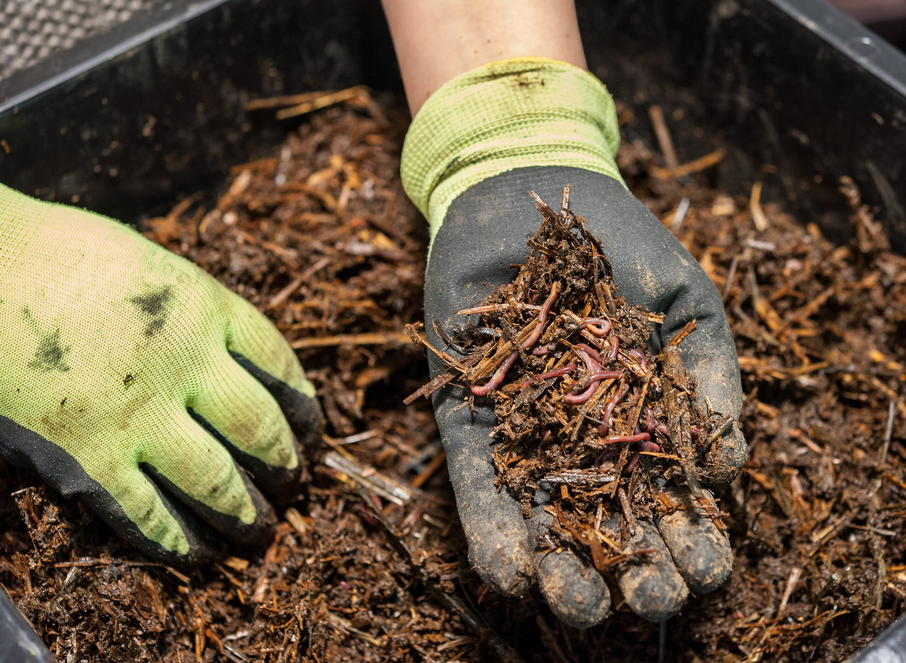
Mejora la fertilidad con materia orgánica
La materia orgánica mejora la estructura, la aireación y la retención de agua, y además ayuda a que
nutrientes como calcio, magnesio, boro, hierro y cobre estén más disponibles para las raíces.
- Recomendación: antes de sembrar melón, sandía, Platanos, ají u otros cultivos exigentes, incorpora compost o estiércol bien descompuesto en la capa arable.
- Uso: combina el uso de abonos orgánicos con rotaciones que incluyan leguminosas (como fríjol) para sostener la fertilidad a mediano plazo.
Suelo
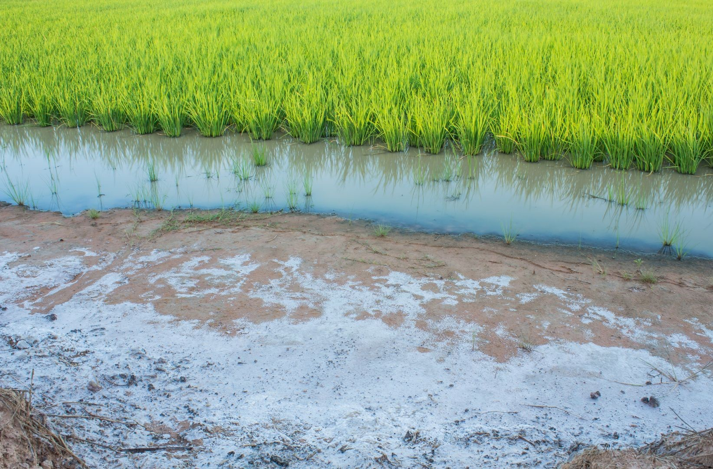
Asegura un buen drenaje para evitar pudriciones y excesos
Yuca, limón, mango, melón y sandía son sensibles al encharcamiento. Además, suelos mal drenados facilitan la
acumulación de sales y ciertos nutrientes en exceso en la zona radicular.
- Recomendación: en suelos pesados, construye camas elevadas y canales de desagüe para sacar el agua excedente después de lluvias fuertes o riegos intensos.
- Uso: si se sospecha exceso de sales o de magnesio/potasio, aprovecha los periodos lluviosos o riegos de lavado para favorecer la lixiviación supervisada, siempre con buen drenaje.
Suelo
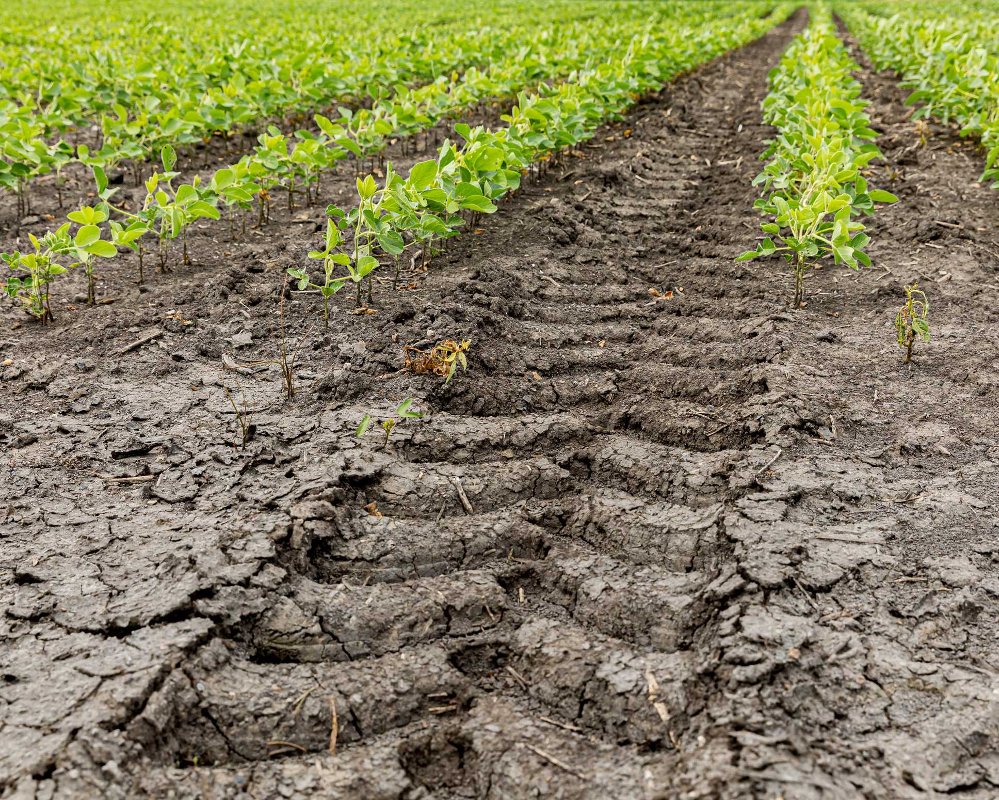
Evita la compactación para favorecer las raíces
Suelos compactados limitan el crecimiento radicular y la entrada de agua y oxígeno, afectando la absorción de
nutrientes en cultivos como maíz, yuca, frutales y pasturas.
- Recomendación: evita el uso de maquinaria pesada cuando el suelo esté muy húmedo y concentra el tránsito en calles definidas para reducir el área compactada.
- Uso: si observas raíces superficiales o encharcamientos localizados, evalúa labores de descompactación mecánica o el uso de cultivos de raíz profunda que “rompan” el suelo.
Suelo
Controla la erosión en pendientes
En laderas o suelos inclinados, la lluvia puede arrastrar la capa fértil y con ella nutrientes importantes
para cultivos como maíz, yuca o pastos.
- Recomendación: traza siembras siguiendo curvas de nivel y combina con barreras vivas (pastos, arbustos) para frenar el escurrimiento y conservar el suelo.
- Uso: en lotes con cultivos como yuca o maíz, evita surcos “cuesta abajo”, que facilitan la pérdida de suelo y fertilizantes hacia las partes bajas del lote.
Suelo
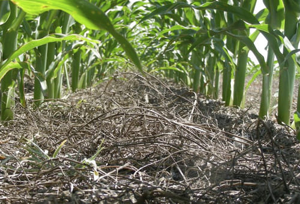
Usa coberturas para proteger el suelo
Mantener el suelo cubierto reduce evaporación, protege la superficie, amortigua cambios de temperatura y
ayuda a conservar tanto la humedad como los nutrientes en la zona radicular.
- Recomendación: usa rastrojos o mulch alrededor de las plantas y entre hileras, evitando dejar el suelo desnudo tras la cosecha.
- Uso: en cultivos rastreros como melón y sandía, la cobertura ayuda a mantener los frutos limpios y reduce el salpicado de suelo con posibles patógenos o sales.
Suelo
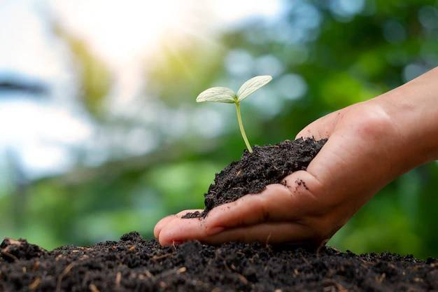
Vigila la salinidad y el exceso de sodio
El uso continuo de riego puede concentrar sales, especialmente sodio, en la zona radicular. Esto afecta la
estructura del suelo y puede dañar cultivos sensibles como ají, melón, fríjol o sandía.
- Recomendación: solicita en el laboratorio la conductividad eléctrica del suelo y del agua de riego si observas costras blancas en superficie o quemas en bordes de hojas.
- Uso: programa riegos de lavado en suelos con tendencia a salinizarse y mejora el drenaje para arrastrar las sales, evitando acumular sodio en el perfil donde están las raíces.
Suelo
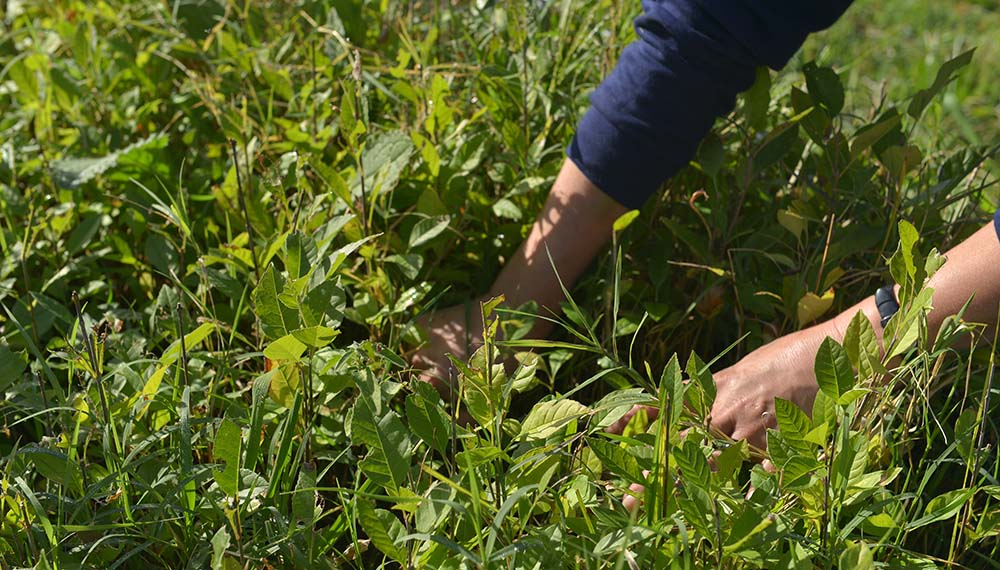
Reconoce señales de deficiencia de calcio y magnesio
Calcio y magnesio participan en la firmeza de los tejidos y en el equilibrio de otros nutrientes. Su
deficiencia puede provocar problemas de calidad en hojas y frutos.
- Calcio: deformación de brotes jóvenes, necrosis en puntas o bordes de hojas nuevas y problemas de cuajado en flores.
- Magnesio: amarillamiento entre las nervaduras en hojas viejas, manteniendo las venas verdes (clorosis intervenal).
- Recomendación: en suelos ácidos o muy lixiviados, revisa los niveles de calcio y magnesio en el análisis y considera enmiendas o fertilizantes que los aporten, según sugerencia técnica.
Suelo
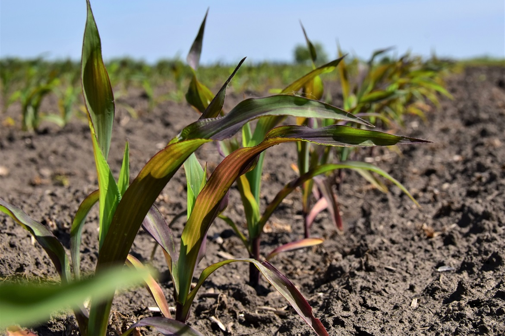
Atiende síntomas de deficiencia de potasio
El potasio ayuda a regular el uso del agua y la tolerancia al estrés. Deficiencias afectan la calidad del
follaje y la resistencia de los cultivos frente a sequía y enfermedades.
- Síntomas frecuentes: quemas en bordes de hojas (necrosis marginal), amarillamiento desde la punta hacia atrás y plantas más sensibles al estrés hídrico.
- Recomendación: verifica el nivel de potasio en suelos arenosos o muy lavados y ajusta la fertilización de acuerdo con el cultivo y el análisis de suelo, evitando aplicar dosis excesivas que desbalanceen otros nutrientes.
Suelo
Relaciona amarillamientos con deficiencia de hierro
El hierro es clave en la formación de clorofila. Su deficiencia es frecuente en suelos muy alcalinos o con
pH elevado, incluso cuando el hierro está presente en el suelo.
- Síntoma típico: hojas jóvenes amarillas con nervaduras verdes (clorosis intervenal en hojas nuevas), mientras las hojas viejas permanecen más verdes.
- Recomendación: si el pH es alto y aparecen estos síntomas, prioriza prácticas que acidifiquen ligeramente la zona radicular y considera aplicaciones foliares de hierro según recomendación técnica.
Suelo
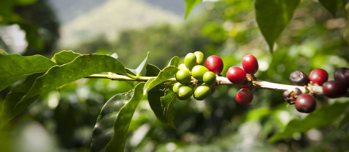
Observa flores y frutos para detectar problemas de boro y cobre
Boro y cobre se requieren en pequeñas cantidades, pero sus deficiencias o excesos generan problemas
importantes en la floración y en la sanidad del follaje.
- Boro: caída de flores, frutos deformes o mal formados y tejidos jóvenes quebradizos; suele asociarse a suelos muy arenosos o con poca materia orgánica.
- Cobre: problemas en la lignificación de tejidos y mayor susceptibilidad a enfermedades cuando hay deficiencia; excesos pueden causar manchas y caída de hojas.
- Recomendación: evita sobredosificar fuentes con boro o cobre, y cuando se requieran, aplícalas en dosis bajas y bien distribuidas, siguiendo siempre una recomendación técnica basada en análisis.
Suelo
Cuida el calcio y el boro en tomate y otras hortalizas de fruto
En cultivos como tomate, ají, melón o sandía, el equilibrio de calcio y boro en el suelo es clave para
que las flores cuajen bien y los frutos se desarrollen completos.
- Señales de problema: frutos deformes, puntas negras o partes acuosas en la base del fruto,
tejidos jóvenes quebradizos o flores que no cuajan.
- Recomendación: en suelos muy arenosos o con poca materia orgánica, verifica estos
nutrientes en el análisis de suelo y usa enmiendas o fertilizantes específicos en dosis moderadas,
repartidas en varias aplicaciones.
Suelo
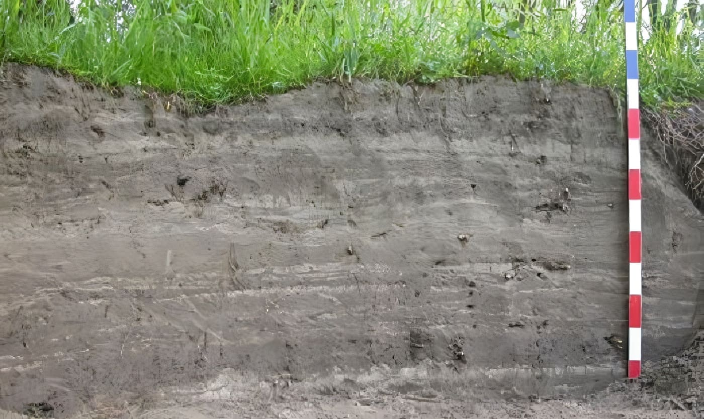
Fluvisoles: suelos jóvenes de valle aluvial
Son suelos formados por depósitos recientes de ríos y ciénagas, con buena profundidad y texturas de franca
a franco–arcillosa. Suelen ser fértiles, pero pueden encharcarse si no hay drenaje.
- Cultivos típicos: maíz, fríjol, Platanos, hortalizas de ciclo corto y pastos de corte cuando se garantiza buen drenaje.
- Recomendación: en zonas bajas, prioriza camellones y canales para evitar que el agua se quede en el cuello de cultivos sensibles como cítricos y mango.
Suelo
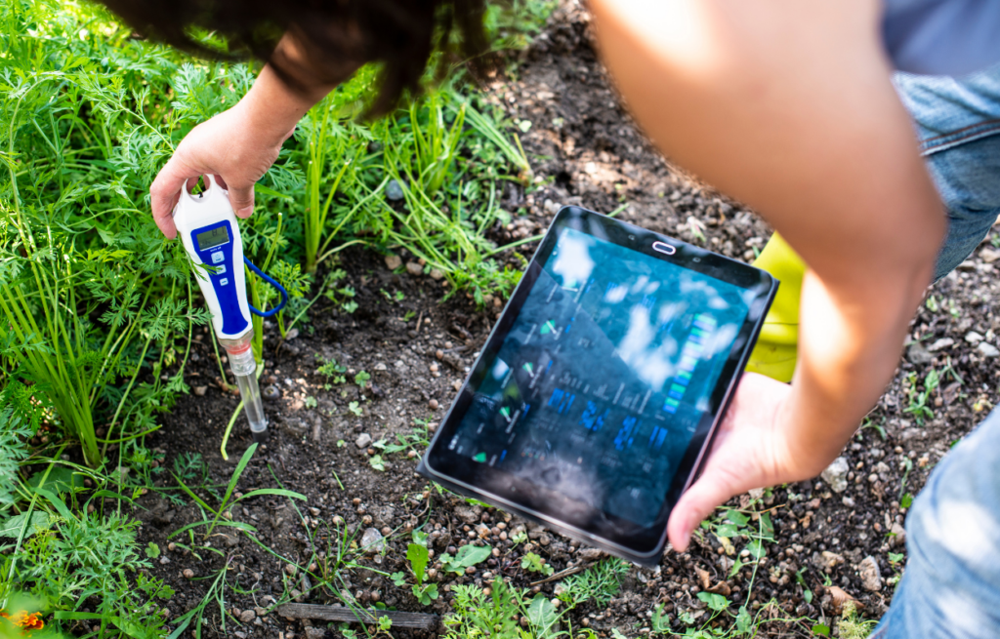
Manejo de pH y fertilidad en Fluvisoles
En estos suelos muchos cultivos clave del Atlántico rinden bien con pH ligeramente ácido a casi neutro.
- Rangos de referencia: maíz (5.8–7.0), yuca (5.5–6.5), limón (5.5–6.5), melón (6.0–6.5) y sandía (6.0–6.8) se adaptan bien en este rango si hay buen drenaje.
- Gestión: refuerza materia orgánica y fertilizantes balanceados (N–P–K y micronutrientes) según análisis de suelo, evitando excesos que se puedan lavar hacia cuerpos de agua.
Suelo
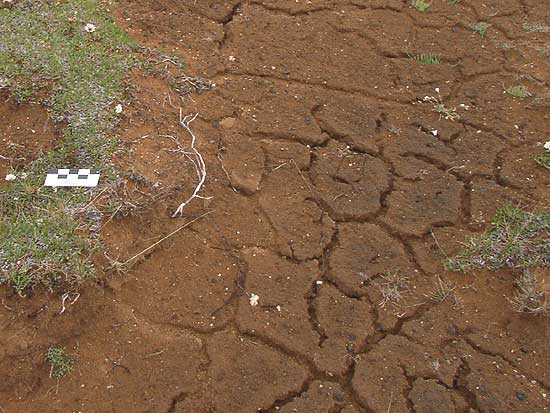
Vertisoles: suelos arcillosos que se agrietan
Son suelos muy arcillosos que se agrietan en seco y se vuelven plásticos cuando están húmedos. Pueden ser
fértiles, pero presentan problemas de encharcamiento y compactación.
- Cultivos recomendados: pastos, maíz y yuca, siempre y cuando se maneje el drenaje y se evite trabajar el suelo demasiado húmedo.
- Limitantes: riesgo de charcos prolongados y mala aireación de raíces; importante cuidar el sistema radicular de cítricos y mango si se establecen ahí.
Suelo
Manejo de Vertisoles: drenaje y descompactación
El foco en Vertisoles es evitar encharcamientos y mejorar la estructura para que las raíces puedan respirar.
- Prácticas clave: drenajes superficiales, surcos bien definidos, tránsito controlado de maquinaria y, cuando sea posible, rotaciones con raíces profundas (yuca, pastos).
- Fertilización: apoya con enmiendas de calcio y materia orgánica para mejorar estructura y facilitar el lavado de excesos de sodio y magnesio cuando los análisis lo indiquen.
Suelo
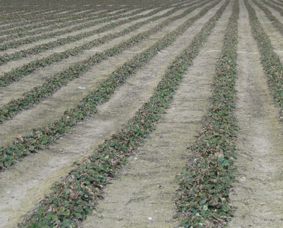
Arenosoles: suelos ligeros y bien drenados
Son suelos muy arenosos, con baja retención de agua y nutrientes. Se calientan rápido y drenan bien, pero se
desecan con facilidad en épocas secas.
- Cultivos recomendados: melón, sandía, ají, tomate y hortalizas de ciclo corto, siempre con riego eficiente.
- Recomendación: son suelos ideales para cultivos de alto valor si se combinan riego por goteo, coberturas y fertilización fraccionada.
Suelo
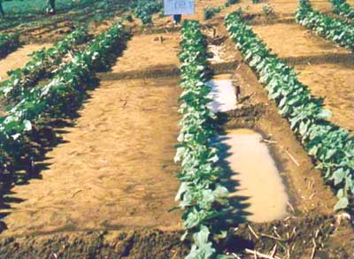
Manejo de Arenosoles: agua, pH y fertilizantes
En Arenosoles el reto es que el agua y los nutrientes se pierden rápido por infiltración profunda.
- Riegos: riegos frecuentes y ligeros (goteo) para cultivos como melón, sandía, ají, tomate y pastos de corte en establecimiento.
- Fertilización: prioriza aplicaciones fraccionadas de N, P, K y micronutrientes, y refuerza la materia orgánica para mejorar la capacidad de retención de agua y nutrientes.
Suelo
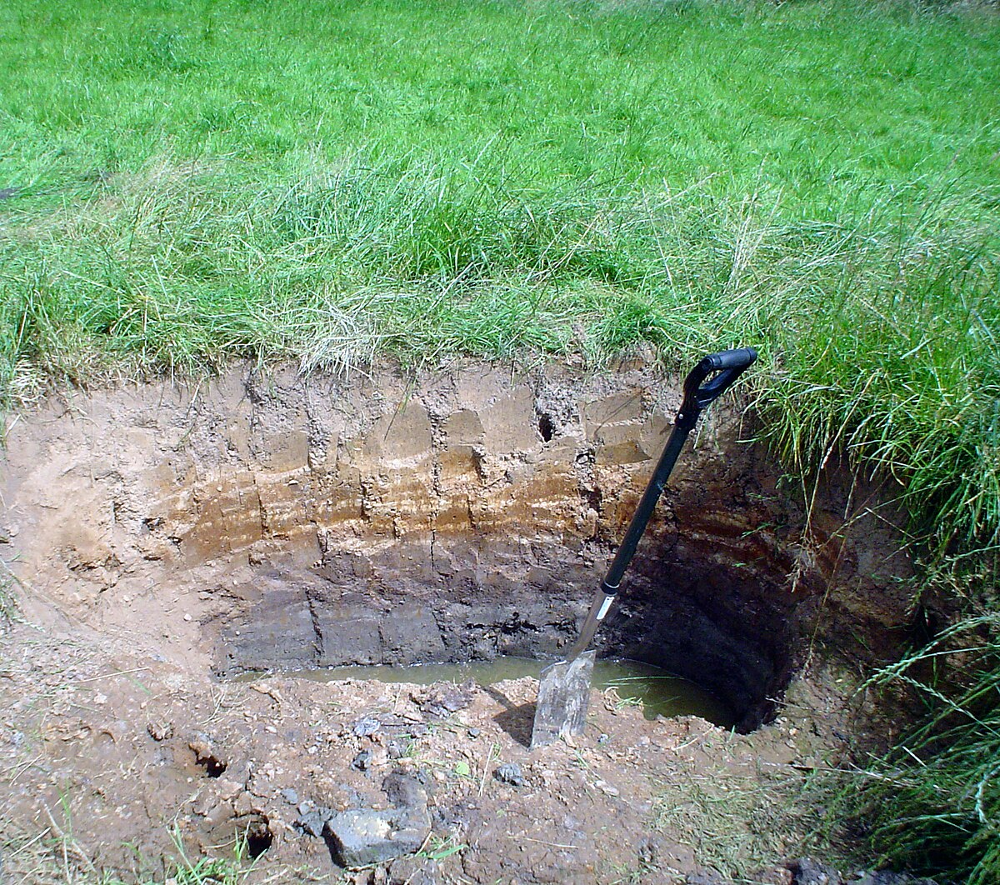
Gleysoles: suelos con saturación de agua (Encharcables)
Son suelos donde el agua se acumula con facilidad, generando condiciones de poca oxigenación. Se encuentran
en zonas bajas o mal drenadas.
- Cultivos con cuidado: yuca, cítricos, mango, melón y sandía son muy sensibles a encharcamientos prolongados.
- Uso recomendado: priorizar pastos o sistemas agroforestales donde el manejo de canales y camellones sea más sencillo.
Suelo
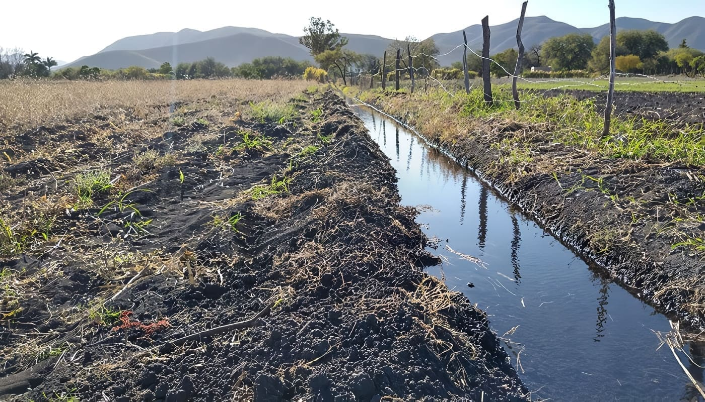
Manejo de Gleysoles(Encharcables): drenaje y raíces sanas
En Gleysoles, el objetivo principal es sacar el exceso de agua del perfil y evitar asfixia radicular.
- Prácticas: camellones elevados para hortalizas y yuca, zanjas de alivio hacia caños o drenajes naturales, y evitar riegos pesados.
- Sanidad: un buen drenaje reduce enfermedades de cuello y raíz en cítricos y mango, y ayuda a controlar problemas de gomosis y pudriciones.
Suelo
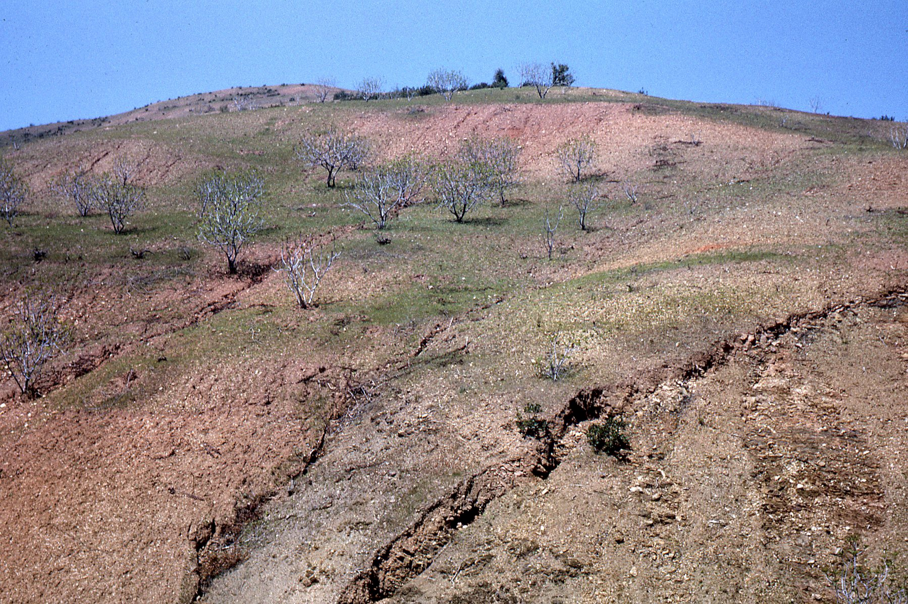
Regosoles: suelos poco desarrollados y pedregosos
Son suelos jóvenes, poco evolucionados, a menudo en laderas o zonas con alta erosión. La capa fértil suele
ser delgada.
- Cultivos recomendados: pastos, sistemas silvopastoriles y cultivos rústicos como yuca; evitar cultivos muy exigentes si la profundidad efectiva es baja.
- Limitante clave: alta susceptibilidad a erosión; hay que evitar surcos “cuesta abajo”.
Suelo
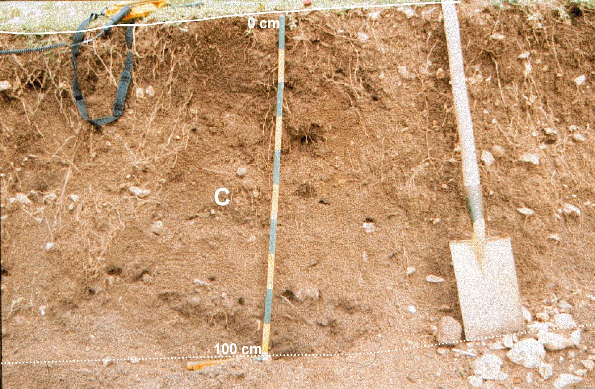
Manejo de Regosoles: conservar cada centímetro de suelo
En Regosoles la prioridad es conservar la capa superficial y aumentar poco a poco la materia orgánica.
- Prácticas: curvas de nivel, barreras vivas, coberturas permanentes y rotaciones con leguminosas para mejorar estructura y fertilidad.
- Fertilización: usar dosis moderadas de fertilizantes, complementadas con abonos orgánicos, para no saturar un suelo de poca profundidad útil.
Suelo
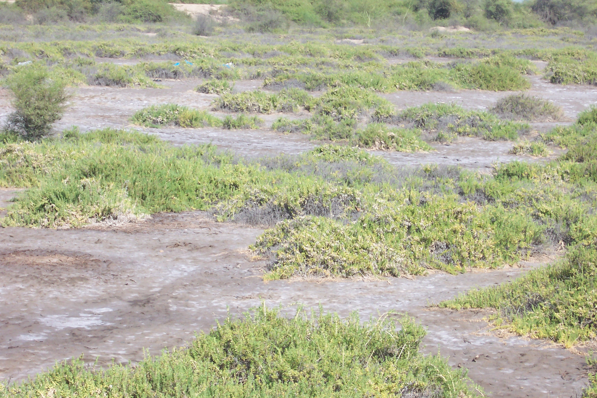
Suelos Salinos: suelos con alta salinidad
Son suelos con acumulación de sales, a veces con costras blancas en superficie. La salinidad limita el
crecimiento de muchos cultivos y reduce la infiltración del agua.
- Indicadores: costras salinas, plantas con bordes de hojas quemados y crecimiento muy lento.
- Cultivos: usar cultivos y pastos más tolerantes a sales mientras se mejora el suelo, evitando cultivos muy sensibles como ají, melón o fríjol en las zonas más afectadas.
Suelo
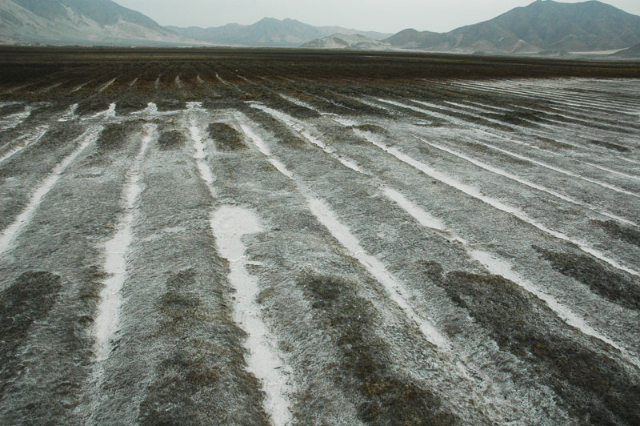
Manejo de Solonchaks: lavado y corrección de sales
En los Suelos Salinos el objetivo es disminuir la salinidad del perfil y mejorar la estructura del suelo.
- Prácticas: asegurar buen drenaje, realizar riegos de lavado cuando haya agua disponible y, según recomendación, usar yeso agrícola para desplazar sodio del complejo de intercambio.
- Prevención: evitar fertilización excesiva con sales solubles y revisar la calidad del agua de riego para no aumentar la salinidad del suelo.
Riego
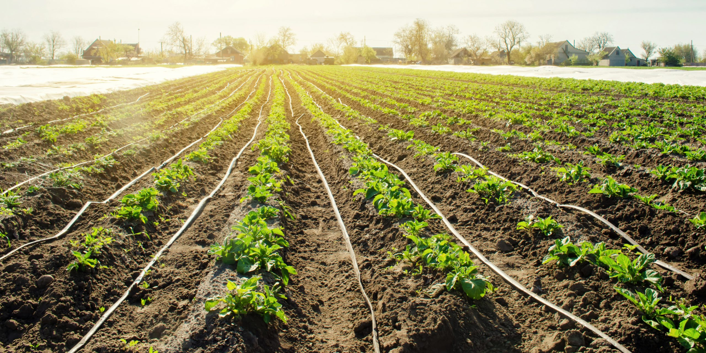
Riega en las horas más frescas del día
El riego temprano en la mañana o al final de la tarde reduce la evaporación y mejora el aprovechamiento
del agua en cultivos de clima cálido como yuca, maíz, melón o ají.
- Recomendación: evita riegos al mediodía, especialmente en días muy calurosos donde la temperatura puede acercarse a 38 °C.
- Uso: ajusta turnos de riego para coincidir con momentos de menor radiación y viento.
Riego
Prioriza riego por goteo en cultivos sensibles
El riego por goteo es ideal para limón, mango, ají, melón y sandía, porque entrega agua directa a la raíz
sin mojar el follaje y reduce enfermedades.
- Recomendación: mantén el sistema limpio para evitar taponamientos y revisa la presión periódicamente.
- Uso: ajusta la frecuencia según la etapa del cultivo: más riegos en floración y llenado de fruto, menos al acercarse la cosecha.
Riego
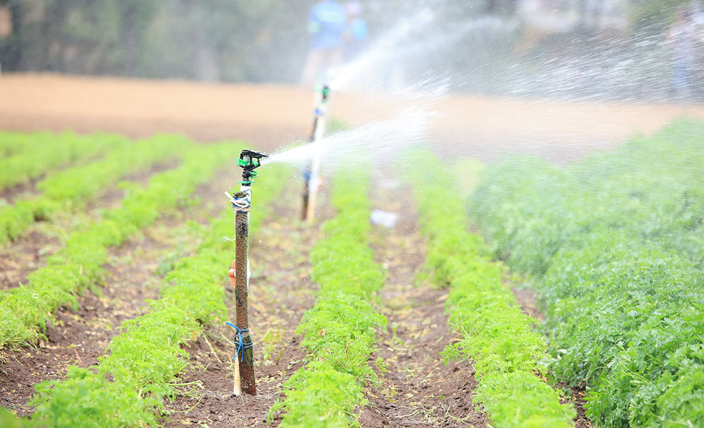
Calibra aspersores para lograr uniformidad
En maíz, pastos y otros cultivos extensivos, una mala distribución del riego genera zonas encharcadas y
otras secas dentro del mismo lote.
- Recomendación: coloca recipientes en varios puntos del lote y mide el volumen aplicado en cada uno.
- Uso: ajusta boquillas, presión y separación entre aspersores hasta obtener una lámina lo más uniforme posible.
Riego
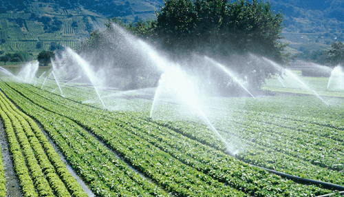
Usa cobertura para espaciar los riegos
En cultivos de hortalizas, ají, melón y sandía, una buena cobertura superficial permite mantener la
humedad más tiempo y reducir la frecuencia de riego.
- Recomendación: aplica mulch orgánico alrededor de las plantas y procura mantener el suelo húmedo pero no encharcado.
- Uso: en suelos muy arenosos, la combinación de goteo y cobertura reduce pérdidas por infiltración profunda y evaporación.
Riego
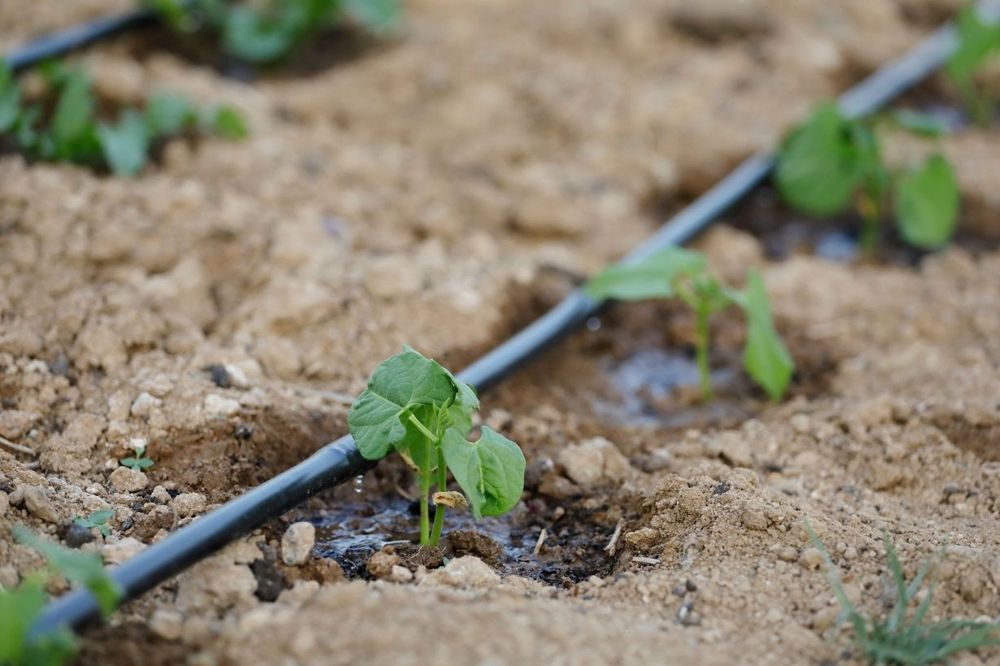
Refuerza el riego en etapas críticas
Floración y llenado de fruto o grano son fases muy sensibles a la falta de agua en cultivos como maíz,
ají, melón, sandía y limón.
- Recomendación: aumenta la frecuencia o duración del riego en floración y formación de frutos, según la respuesta del cultivo.
- Uso: evita excesos justo antes de la cosecha de melón y sandía para reducir el riesgo de rajado o problemas de calidad.
Riego
Cuida la calidad del agua de riego
La calidad del agua influye en la salud del suelo y del cultivo. Aguas con alta salinidad o contaminantes
afectan cultivos como ají, fríjol, melón y sandía y favorecen el exceso de sodio en el perfil.
- Recomendación: evita descargar residuos o agroquímicos en canales, jagüeyes o fuentes que uses para riego.
- Uso: analiza periódicamente la conductividad eléctrica y otros parámetros básicos del agua utilizada para detectar problemas antes de que aparezcan síntomas en los cultivos.
Riego
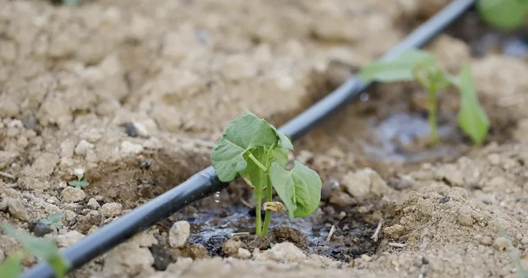
Planifica riegos de apoyo para sequías cortas
Un riego oportuno en una ola de calor puede evitar pérdidas importantes, incluso en cultivos más
tolerantes como yuca o pastos.
- Recomendación: ten identificado qué lotes priorizar (cultivos en floración, ají, melón, sandía, maíz en llenado de grano).
- Uso: organiza equipo y fuentes de agua alternativas para reaccionar rápido ante una sequía corta.
Riego
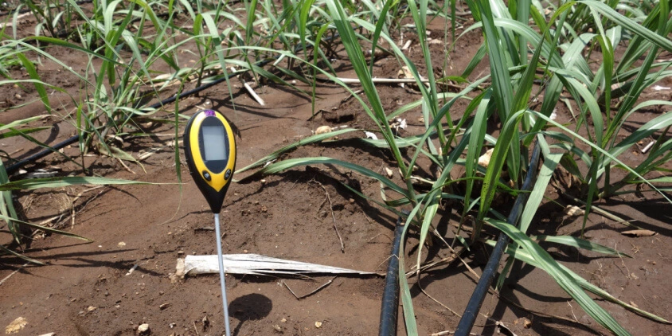
Monitorea la humedad del suelo de forma sencilla
Para cultivos como yuca, limón, mango o ají, revisar la humedad evita tanto el exceso como el déficit
de riego.
- Método simple: introduce el dedo unos 5 cm en el suelo; si está seco, es momento de regar (útil en yuca y hortalizas).
- Uso: complementa con sensores o tensiómetros en cultivos de mayor inversión como frutales y cucurbitáceas.
Riego
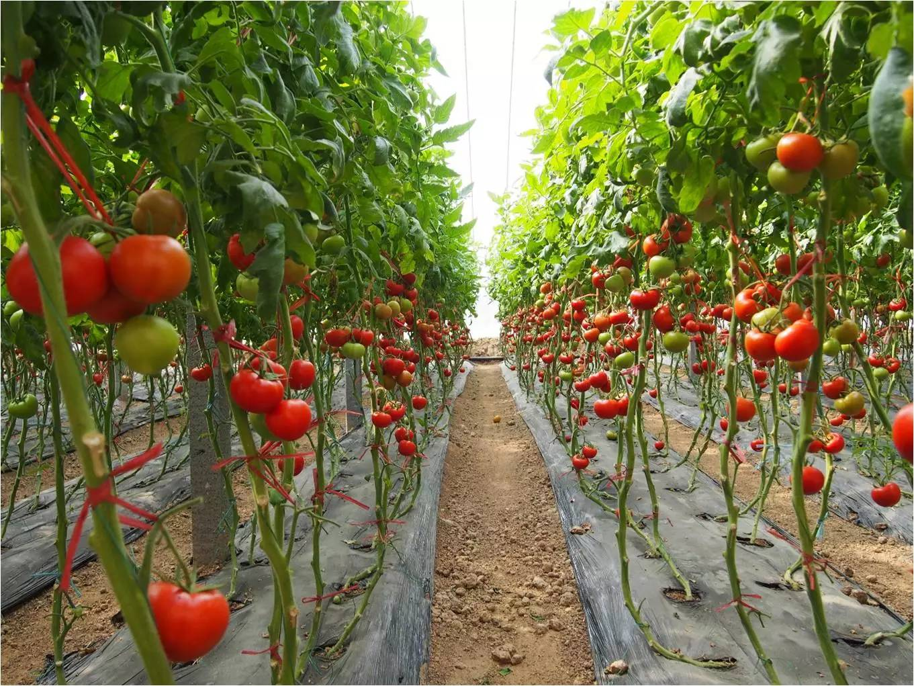
Evita cambios bruscos de riego en tomate y ají
Tomate y ají son muy sensibles a riegos irregulares: pasar de sequía a exceso de agua en poco tiempo
aumenta problemas de rajado y pudriciones en los frutos.
- Recomendación: programa riegos más frecuentes y de menor lámina, manteniendo el suelo
uniformemente húmedo pero sin encharcamientos, preferiblemente con goteo.
- Uso: combina riego regular con coberturas (mulch) para evitar que la superficie del
suelo se seque demasiado rápido entre riego y riego.
Clima
Ajusta la fecha de siembra al clima del cultivo
Cada cultivo tiene un rango de temperatura óptimo. Sembrar fuera de ese rango aumenta el riesgo de
estrés, enfermedades o baja germinación.
- Ejemplos: la yuca se desarrolla bien entre 20 y 30 °C; el maíz entre 20 y 38 °C, evitando los picos más altos.
- Uso: revisa históricos de clima y desplaza la fecha de siembra si las lluvias o las temperaturas han cambiado en los últimos años.
Clima
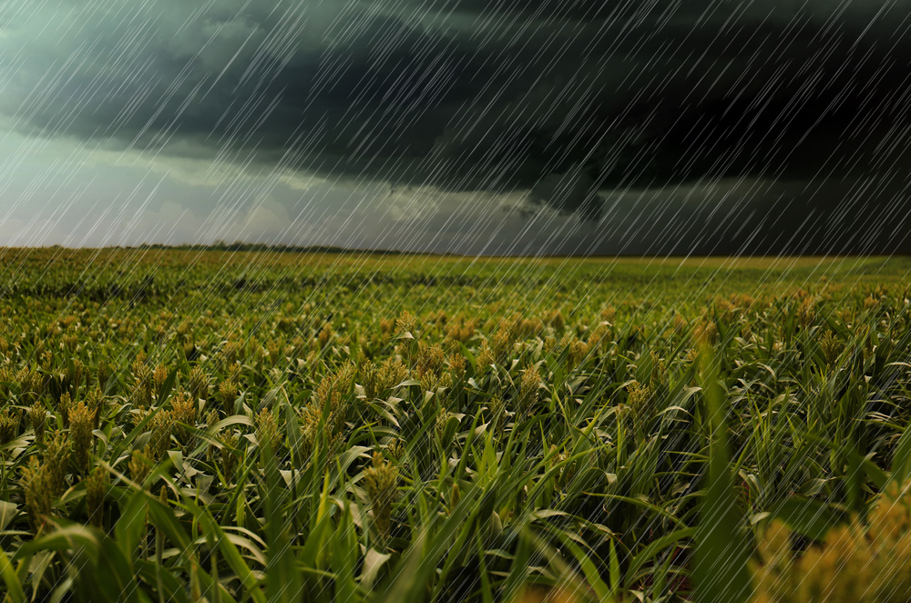
Sincroniza cultivos con la época de lluvias
Cultivos de alta demanda hídrica como maíz, pastos o sandía aprovechan mejor su potencial cuando se
establecen cerca del inicio de la temporada de lluvias.
- Recomendación: siembra maíz y pastos cuando se prevean lluvias regulares para reducir el gasto en riego suplementario.
- Uso: en melón y sandía, combina la época de lluvias con sistemas de drenaje que eviten encharcamientos.
Clima
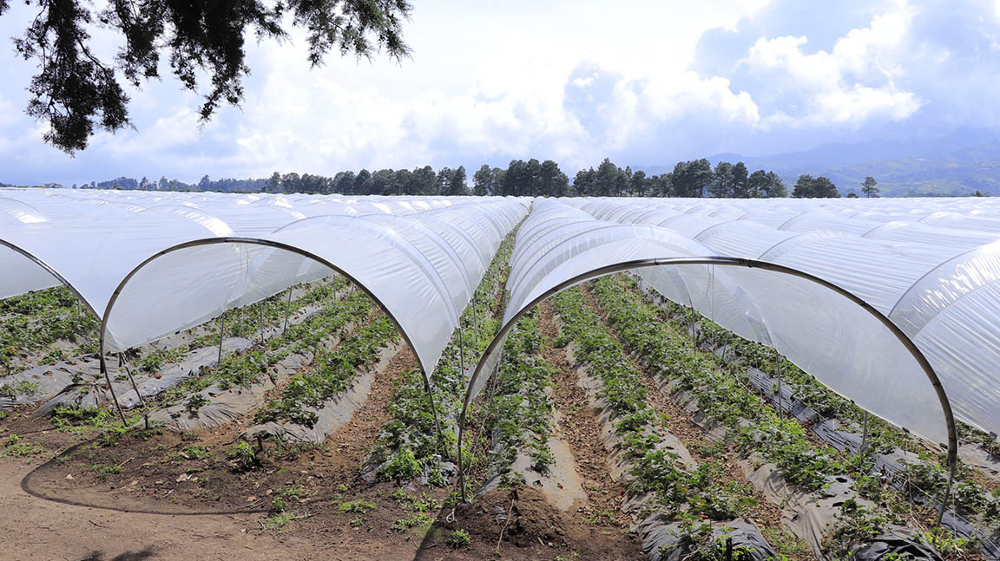
Protege los cultivos de vientos fuertes
Vientos intensos pueden tumbar plantas altas como maíz o plátano, quebrar ramas de mango y dañar
frutos expuestos como los cítricos.
- Recomendación: instala rompevientos vivos con árboles o arbustos en el perímetro del lote.
- Uso: evita hileras largas orientadas en la misma dirección del viento predominante para reducir el efecto “vela”.
Clima
Apóyate en datos meteorológicos cercanos
Temperatura, humedad y lluvia diaria ayudan a decidir riegos, fertilización y manejo de plagas en
cultivos como limón, mango, ají o melón.
- Recomendación: consulta estaciones cercanas o plataformas oficiales y registra lluvia, temperaturas máximas y mínimas.
- Uso: ajusta labores sensibles (aplicaciones, podas, riegos) en función de pronósticos de lluvias intensas o calor extremo.
Clima
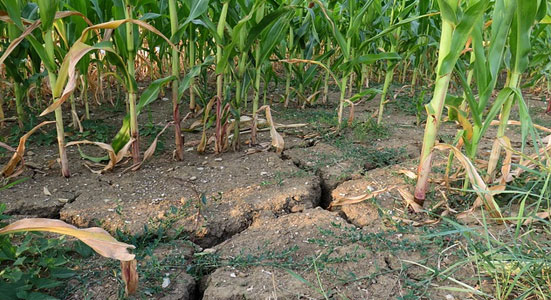
Anticípate a las olas de calor
Temperaturas muy altas pueden afectar floración y formación de fruto en maíz, ají, melón, mango y
otros cultivos sensibles.
- Recomendación: mantente atento a alertas de temperaturas extremas y prepara riegos de apoyo.
- Uso: en ají y otros cultivos delicados, considera mallas sombra para disminuir el estrés térmico en los días más críticos.
Clima
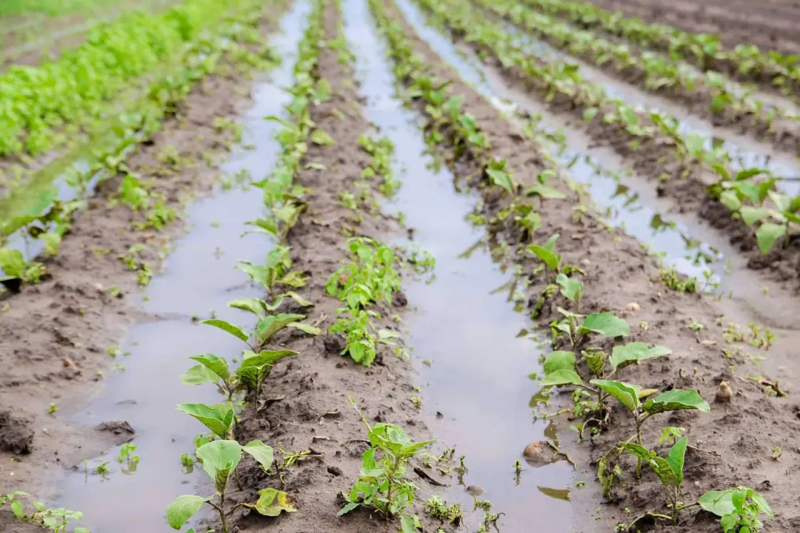
Prepárate para lluvias extremas
Las lluvias intensas pueden provocar encharcamientos que afectan raíces de yuca, cítricos, mango,
melón y sandía, entre otros cultivos.
- Recomendación: diseña rutas de evacuación de agua y canales de alivio en los puntos más bajos del lote.
- Uso: mantén limpios los canales y evita obstrucciones antes de la temporada de lluvias fuertes.
Clima
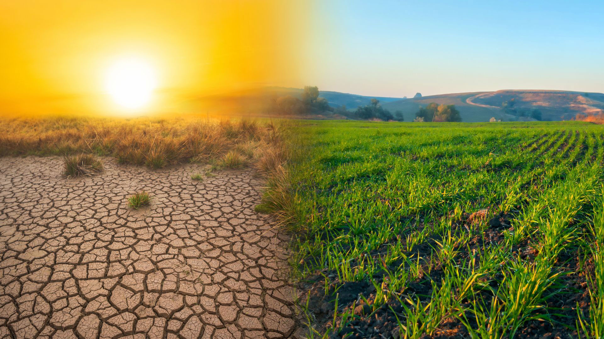
Combina datos climáticos con tu experiencia
Los modelos climáticos son generales, pero tu experiencia en el lote ayuda a afinar fechas de siembra,
riegos y selección de variedades.
- Recomendación: registra cada año fechas de primeros aguaceros, sequías y olas de calor.
- Uso: ajusta el calendario de siembra de cultivos como maíz, yuca, melón, sandía o pastos según esos registros locales.
Clima
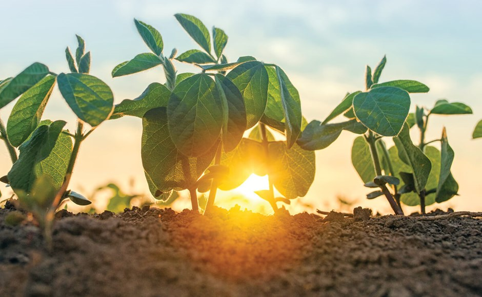
Escoge variedades adaptadas al calor del Atlántico
Variedades tolerantes a altas temperaturas y periodos secos cortos son más estables en rendimiento
en el clima cálido del Atlántico.
- Recomendación: para maíz, yuca, ají, melón o sandía, consulta materiales recomendados para climas cálidos y tropicales.
- Uso: prueba nuevas variedades en pequeñas parcelas antes de ampliar la siembra a todo el lote.
Gestión
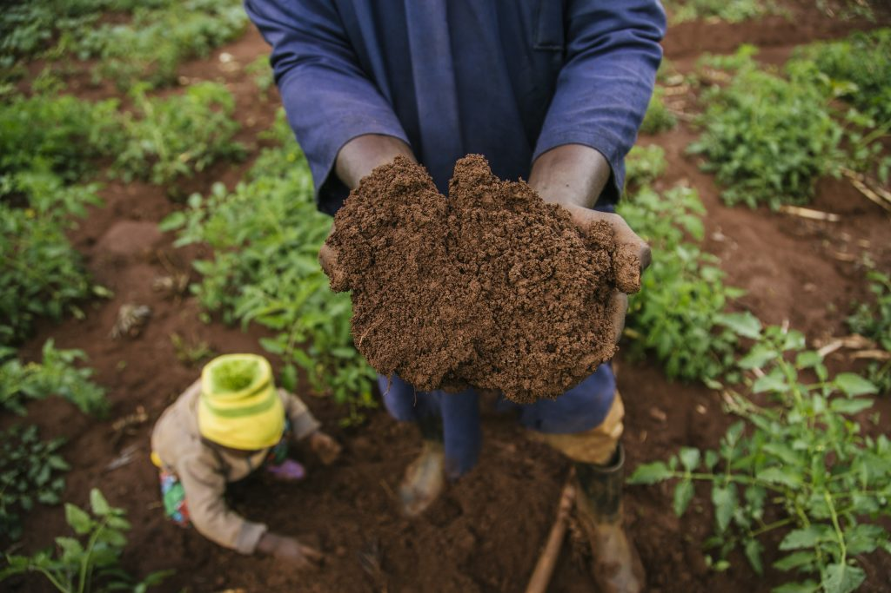
Registra labores, insumos, síntomas y rendimientos
Llevar un registro sencillo de lo que haces en maíz, yuca, melón, limón, mango o ají permite comparar
campañas y entender mejor qué prácticas funcionan.
- Recomendación: anota fecha, cultivo, producto, dosis y responsable de cada labor, e incluye observaciones sobre síntomas de deficiencia o exceso de nutrientes.
- Uso: relaciona rendimientos con las prácticas de fertilización, riego y control de plagas que aplicaste para ajustar el manejo en la siguiente siembra.
Gestión
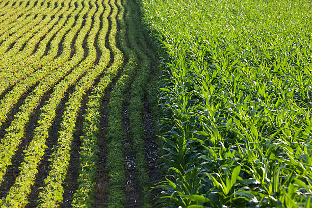
Diseña rotaciones que mejoren el suelo
Alternar cultivos como maíz, fríjol, ají y pastos ayuda a romper ciclos de plagas y a mejorar la
fertilidad del suelo.
- Recomendación: incluye leguminosas como fríjol para aportar nitrógeno biológico y recuperar lotes agotados, combinando con buenas prácticas de fertilización de otros nutrientes.
- Uso: evita repetir cultivos exigentes en el mismo lote varios ciclos seguidos, especialmente melón y sandía.
Gestión
Aprovecha asociaciones compatibles
Algunas combinaciones de cultivos mejoran el uso del espacio y de los nutrientes y ayudan a controlar
plagas de forma natural.
- Recomendación: evalúa asociaciones como maíz–fríjol o yuca con cultivos de cobertura que protejan el suelo.
- Uso: asegura que las especies asociadas no compitan en exceso por luz, agua o nutrientes, ajustando densidades y distancias de siembra.
Gestión
Planifica la mano de obra en momentos clave
Siembra, deshierbe, podas y cosecha de cultivos como maíz, yuca, cítricos, mango o hortalizas suelen
concentrarse en pocos días.
- Recomendación: arma un calendario semanal de labores por cultivo y etapa, incluyendo las aplicaciones de correctivos nutricionales cuando sean necesarias.
- Uso: coordina con anticipación el apoyo de familiares o jornaleros para no atrasar actividades críticas.
Gestión
Compra insumos a tiempo y con criterio técnico
Fertilizantes y productos para manejo de plagas deben elegirse según las necesidades del cultivo y del
suelo, no solo por precio.
- Recomendación: para corregir deficiencias de calcio, magnesio, potasio o micronutrientes (boro, hierro, cobre), basa las decisiones en análisis de suelo y foliar, evitando compras “a ciegas”.
- Uso: para mango, cítricos y otros frutales, prioriza fertilizantes con buen aporte de potasio y micronutrientes, siguiendo dosis y épocas recomendadas.
Gestión
Planea cómo vas a vender tu producción
Definir con anticipación a quién y cómo vas a vender melón, sandía, ají, yuca o maíz ayuda a obtener
mejores precios.
- Recomendación: identifica compradores y requisitos de calidad (tamaño, sanidad, clasificación) para cada cultivo.
- Uso: evalúa ventas en grupo o asociaciones para negociar mejores condiciones comerciales.
Gestión
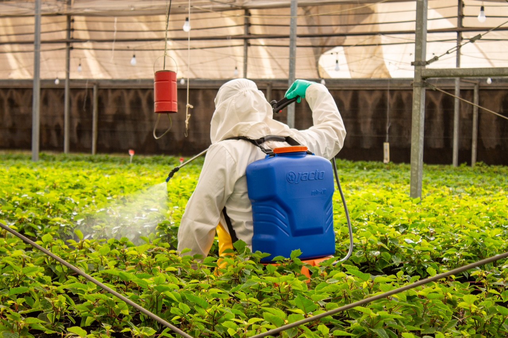
Gestiona los riesgos de clima, plagas y nutrición
Yuca, maíz, cítricos, mango, ají, melón y sandía comparten riesgos por plagas, clima extremo y también por
deficiencias o excesos de nutrientes.
- Recomendación: elabora una lista de riesgos principales (sequía, lluvias intensas, plagas clave, salinidad, deficiencias de calcio, potasio, etc.) y define acciones preventivas.
- Uso: realiza monitoreos frecuentes y registra la presencia de síntomas o plagas para actuar a tiempo, priorizando el manejo integrado y el uso eficiente de insumos.
Gestión
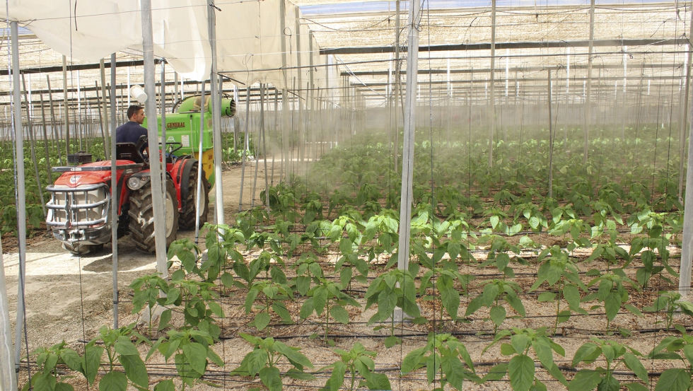
Evalúa proteger tus cultivos de alto valor
En cultivos de mayor inversión como cítricos, mango, melón, sandía o ají, un evento climático extremo
puede significar grandes pérdidas económicas.
- Recomendación: revisa ofertas de seguros o programas de protección disponibles para tu zona y tus cultivos.
- Uso: prioriza asegurar parcelas donde concentras mayor inversión en insumos, riego o mano de obra.
Gestión
Realiza correcciones nutricionales de forma gradual
Corregir deficiencias de calcio, magnesio, potasio o micronutrientes de golpe puede generar excesos
o desbalances con otros elementos.
- Recomendación: cuando un análisis indique deficiencia, planifica la corrección en varias aplicaciones menores en vez de una sola dosis alta.
- Uso: revisa la respuesta del cultivo (color, vigor, síntomas) después de cada aplicación y ajusta el plan si es necesario.
Gestión
Elige entre aplicaciones al suelo o foliares según el problema
Algunos nutrientes se corrigen mejor vía suelo y otros responden bien a aplicaciones foliares, sobre todo
micronutrientes como hierro, boro o cobre.
- Recomendación: usa aplicaciones foliares para respuestas más rápidas en deficiencias de micronutrientes, respetando siempre las dosis recomendadas por el fabricante.
- Uso: en el caso de calcio, magnesio o potasio, combina ajustes de fertilización al suelo con prácticas de riego y manejo de pH para una solución más estable.
Plagas
Maíz: plagas clave y manejo básico
En el maíz del Atlántico son frecuentes el gusano cogollero, el gusano elotero, los pulgones y los trips.
- Monitoreo: revisa semanalmente el cogollo y las hojas jóvenes para detectar perforaciones, larvas y presencia de pulgones.
- Manejo: usa semillas certificadas, trampas de feromonas para cogollero y, cuando sea posible, apoyo de control biológico. Mantén la densidad de siembra recomendada para evitar plantas débiles.
Plagas
Yuca: mosca blanca, ácaros y manejo integrado
Las plagas más comunes en yuca son moscas blancas, ácaros y la llamada “garrapata roja”, que afectan hojas y brotes.
- Monitoreo: observa el envés de las hojas en busca de colonias y daño por succión (amarillamiento, hojas encrespadas).
- Manejo: combina control biológico, buena ventilación del cultivo y drenaje adecuado; evita exceso de nitrógeno que favorece brotes muy tiernos y susceptibles.
Plagas
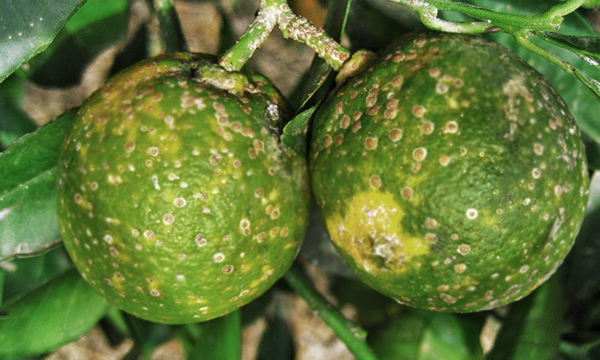
Limón y cítricos: minador, mosca blanca y mosca de la fruta
En limón son frecuentes el minador de la hoja, la mosca blanca, los ácaros rojos, los pulgones y la mosca de la fruta.
- Manejo cultural: podas de formación y sanitarias para airear la copa y reducir focos de plagas.
- Medidas clave: trampas para mosca de la fruta, control biológico del minador y fertilización balanceada (incluyendo micronutrientes) para mantener el árbol vigoroso.
Plagas
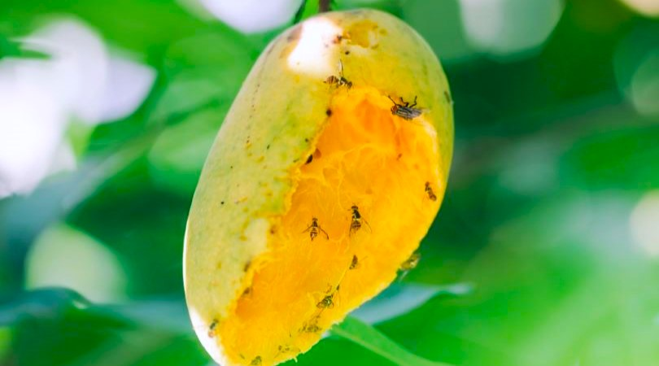
Mango: mosca de la fruta y plagas de brotes
En mango destacan la mosca de la fruta, trips, pulgones, ácaros y el barrenador del fruto, que afectan brotes nuevos y producción.
- Monitoreo: revisa brotes tiernos y frutos pequeños en busca de deformaciones, galerías o presencia de larvas.
- Manejo: mantener el suelo limpio bajo los árboles, podas que favorezcan ventilación, uso de trampas para mosca de la fruta y fertilizaciones ricas en potasio para mejorar sanidad y calidad de fruto.
Plagas
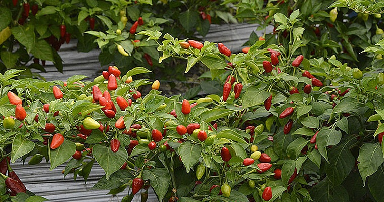
Ají: plagas en hojas y frutos
El ají es muy sensible a mosca blanca, trips, pulgones, ácaros, minador y gusanos perforadores del fruto.
- Monitoreo: inspecciona el envés de las hojas y frutos jóvenes en busca de manchas, galerías y perforaciones.
- Manejo: desinfección previa del suelo, uso de mallas antiinsectos, riego uniforme y fertilización rica en calcio para reducir caída de flores y pudrición apical.
Plagas
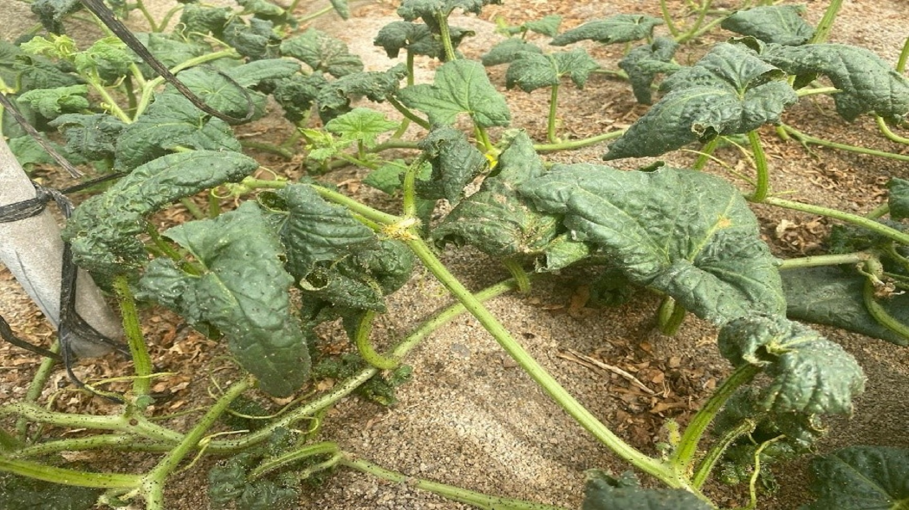
Melón: plagas chupadoras y transmisión de virus
En melón son comunes pulgones y mosca blanca, que debilitan la planta y pueden transmitir virosis.
- Prevención: establecer las plantas en suelos sanos, bien drenados y ricos en materia orgánica, con buena ventilación del cultivo.
- Manejo: monitoreo frecuente de plagas chupadoras, uso de control biológico y manejo cuidadoso de fertilización nitrogenada para evitar un exceso de brotes tiernos.
Plagas
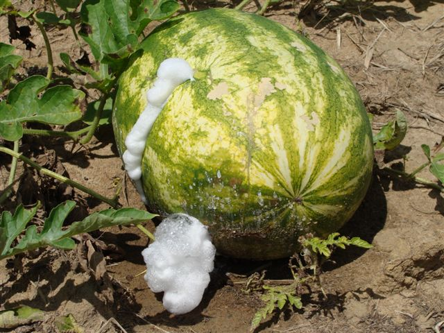
Sandía: pulgones, trips y orugas
La sandía puede ser atacada por pulgones, mosca blanca, trips, orugas (gusanos trozadores, cogollero), ácaros y nemátodos.
- Monitoreo: revisar hojas jóvenes, tallos y cuello de las plantas en busca de daños de masticadores y chupadores.
- Manejo: combinar rotación de cultivos, riego por goteo y control oportuno de plagas para proteger hojas y frutos, evitando rajados por estrés hídrico.
Plagas
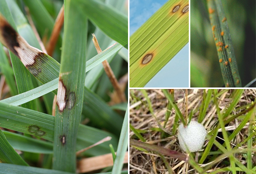
Pastos: gusano cogollero y mión de los pastos
En pasturas del Atlántico son importantes el gusano cogollero y el mión de los pastos, que pueden afectar grandes superficies.
- Monitoreo: observa el cogollo y la base de las plantas en busca de daños, excretas y presencia de insectos.
- Manejo: ajustar la carga animal, evitar sobrepastoreo, usar rotación de potreros y, si se requiere, apoyo biológico o químico siguiendo recomendaciones técnicas.
No se encontraron tips con esos filtros. Intenta cambiar la categoría o la búsqueda.